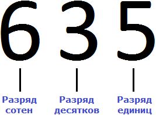
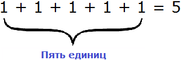
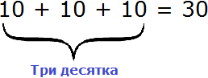

Наш первый урок назывался числа. Мы рассмотрели лишь малую часть этой темы. На самом деле тема чисел достаточно обширна. В ней много тонкостей и нюансов, много хитростей и интересных фишек.
Сегодня мы продолжим тему чисел, но опять же не будем рассматривать её всю, чтобы не затруднять обучение лишней информацией, которая на первых порах не особо-то и нужна. Мы поговорим о разрядах.
Что такое разряд?
Если говорить простым языком, то разряд это позиция цифры в числе или место, где располагается цифра. Возьмём для примера число 635. Это число состоит из трёх цифр: 6, 3 и 5.
Разряды надо читать справа налево. В числе 635 на первой позиции располагается цифра 5, на второй позиции – цифра 3, на третьей позиции – цифра 6.
Позиция, где располагается цифра 5, называется разрядом единиц
Позиция, где располагается цифра 3, называется разрядом десятков
Позиция, где располагается цифра 6, называется разрядом сотен

Каждый из нас слышал со школы такие вещи как «единицы», «десятки», «сотни». Разряды помимо того что играют роль позиции цифры в числе, сообщают нам некоторую информацию о самом числе. В частности, разряды сообщают нам вес числа. Они сообщают сколько в числе единиц, сколько десятков и сколько сотен.
Вернёмся к нашему числу 635. В разряде единиц располагается пятёрка. О чём это говорит? А говорит это о том, что разряд единиц содержит пять единичек. Выглядит это так:

В разряде десятков располагается тройка. Это говорит о том, что разряд десятков содержит три десятка. Выглядит это так:

В разряде сотен располагается шестёрка. Это говорит о том, что в разряде сотен располагаются шесть сотен. Выглядит это так:
Если сложить число получившихся единиц, число десятков и число сотен, то получим наше изначальное число 635
Существуют и более старшие разряды такие как разряд тысяч, разряд десятков тысяч, разряд сотен тысяч, разряд миллионов и так далее. Такие большие числа мы будем рассматривать редко, но тем не менее о них тоже желательно знать.
Например, в числе 1 645 832 разряд единиц содержит 2 единицы, разряд десятков — 3 десятка, разряд сотен — 8 сотен, разряд тысяч — 5 тысяч, разряд десятков тысяч — 4 десятка тысяч, разряд сотен тысяч — 6 сотен тысяч, разряд миллионов — 1 миллион.
На первых этапах изучения разрядов желательно разбираться сколько единиц, десятков, сотен содержит то или иное число. К примеру, число 9 содержит 9 единиц. Число 12 содержит две единицы и один десяток. Число 123 содержит три единицы, два десятка и одну сотню.
Группировка предметов
После подсчета каких-нибудь предметов, разряды можно использовать для группировки этих предметов. К примеру, если мы насчитали во дворе 35 кирпичей, то можно использовать разряды для группировки этих кирпичей. В случае группировки предметов, разряды можно читать слева направо. Так, цифра 3 в числе 35 будет говорить о том, что в числе 35 содержатся три десятка. А это значит, что 35 кирпичей можно сгруппировать три раза по десять штук.
Итак, сгруппируем кирпичи три раза по десять штук:
Получилось тридцать кирпичей. Но осталось еще пять единиц кирпичей. Их мы назовем как «пять единиц»
Получилось три десятка и пять единиц кирпичей.
А если бы мы не стали группировать кирпичи на десятки и единицы, то можно было бы сказать, что число 35 содержит тридцать пять единиц. Такая группировка тоже была бы допустимой:
Аналогично можно рассуждать и про другие числа. К примеру, о числе 123. Ранее мы сказали, что это число содержит три единицы, два десятка и одну сотню. Но можно ещё сказать, что это число содержит 123 единицы. Более того, можно сгруппировать это число и другим образом, сказав что оно содержит 12 десятков и 3 единицы.
Слова единицы, десятки, сотни, заменяют собой множимые 1, 10 и 100. К примеру, в разряде единиц числа 123 располагается цифра 3. С помощью множимого 1 можно записать, что эта единица содержится в разряде единиц три раза:
1 × 3 = 3
Далее в разряде десятков числа 123 располагается цифра 2. С помощью множимого 10 можно записать, что эта десятка содержится в разряде десятков два раза:
10 × 2 = 20
Далее в разряде сотен числа 123 располагается цифра 1. С помощью множимого 100 можно записать, что эта сотня содержится в разряде сотен один раз:
100 × 1 = 100
Если сложить полученные результаты 3, 20 и 100, то получим число 123
3 + 20 + 100 = 123
То же самое будет происходить если мы скажем, что число 123 содержит 12 десятков и 3 единицы. Другими словами, десятки будут сгруппированы 12 раз:
10 × 12 = 120
А единицы три раза:
1 × 3 = 3
Это можно понять на следующем примере. Если имеется 123 яблока, то можно сгруппировать первые 120 яблок 12 раз по 10 штук:
Получилось сто двадцать яблок. Но осталось еще три яблока. Их мы назовем как «три единицы»

Если сложить полученные результаты 120 и 3, снова получим число 123
120 + 3 = 123
Ещё можно сгруппировать 123 яблока на одну сотню, два десятка и три единицы.
Сгруппируем сотню:
Сгруппируем два десятка:
Сгруппируем три единицы:
Если сложить полученные результаты 100, 20 и 3, снова получим число 123
100 + 20 + 3 = 123
Ну и наконец, рассмотрим последнюю возможную группировку, где яблоки не будут распределяться на десятки и сотни, а будут собраны вместе. В таком случае число 123 будет читаться как «сто двадцать три единицы». Такая группировка тоже будет допустимой:
1 × 123 = 123
Пример 3. Прочитать число 523 всеми возможными способами.
Число 523 можно прочесть, как 3 единицы, 2 десятка и 5 сотен:
1 × 3 = 3 (три единицы)
10 × 2 = 20 (два десятка)
100 × 5 = 500 (пять сотен)
3 + 20 + 500 = 523
Ещё можно прочесть, как 3 единицы 52 десятка:
1 × 3 = 3 (три единицы)
10 × 52 = 520 (пятьдесят два десятка)
3 + 520 = 523
Ещё число 523 можно прочесть, как 523 единицы:
1 × 523 = 523 (пятьсот двадцать три единицы)
Где применить разряды?
Разряды существенно облегчают некоторые вычисления. Представьте, что вы у доски и решаете задачу. Вы почти закончили задачу, осталось только вычислить последнее выражение и получить ответ. Выражение, которое надо вычислить, выглядит следующим образом:
Калькулятора под рукой нет, а хочется быстро записать ответ и удивить всех скоростью своих вычислений. Всё просто, если отдельно сложить единицы, отдельно десятки и отдельно сотни. Начинать нужно с разряда единиц. В первую очередь после знака равно (=) необходимо мысленно поставить три точки. Вместо этих точек будет располагаться новое число (наш ответ):
Теперь начинаем складывать. В разряде единиц числа 632 располагается цифра 2, а в разряде единиц числа 264 — цифра 4. Это означает, разряд единиц числа 632 содержит две единицы, а разряд единиц числа 264 содержит четыре единицы. Складываем 2 и 4 единицы — получаем 6 единиц. Записываем цифру 6 в разряде единиц нового числа (нашего ответа):
Далее складываем десятки. В разряде десятков числа 632 располагается цифра 3, а в разряде десятков числа 264 — цифра 6. Это означает, что разряд десятков числа 632 содержит три десятка, а разряд десятков числа 264 содержит шесть десятков. Складываем 3 и 6 десятков — получаем 9 десятков. Записываем цифру 9 в разряде десятков нового числа (нашего ответа):
Ну и в завершении складываем отдельно сотни. В разряде сотен числа 632 располагается цифра 6, а в разряде сотен числа 264 — цифра 2. Это означает, что разряд сотен числа 632 содержит шесть сотен, а разряд сотен числа 264 содержит две сотни. Складываем 6 и 2 сотни, получаем 8 сотен. Записываем цифру 8 в разряде сотен нового числа (нашего ответа):
Таким образом, если к числу 632 прибавить 264, получается 896. Конечно, вы вычислите подобное выражение быстрее и окружающие начнут удивляться вашим способностям. Они будут думать, что вы быстро вычисляете большие числа, а на самом деле вы вычисляли маленькие. Согласитесь, что маленькие числа вычислять легче, чем большие.
Переполнение разряда
Разряд характеризуется одной цифрой от 0 до 9. Но иногда при вычислении числового выражения в середине решения может произойти переполнение разряда.
Например, при сложении чисел 32 и 14 переполнения не происходит. Сложение единиц этих чисел даст 6 единиц в новом числе. А сложение десятков этих чисел даст 4 десятка в новом числе. Получится ответ 46 или шесть единиц и четыре десятка.
А вот при сложении чисел 29 и 13 произойдёт переполнение. Сложение единиц этих чисел даёт 12 единиц, а сложение десятков 3 десятка. Если в новом числе в разряде единиц записать полученные 12 единиц, а в разряде десятков записать полученные 3 десятка, то получится ошибка:
Значение выражения 29 + 13 равно 42, а не 312. Как же следует поступать при переполнении? В нашем случае переполнение случилось в разряде единиц нового числа. При сложении девяти и трёх единиц у нас получилось 12 единиц. А в разряд единиц можно записывать только цифры в диапазоне от 0 до 9.
Дело в том, что 12 единиц это не просто «двенадцать единиц». По другому это число можно прочитать как «две единицы и один десяток». Разряд единиц предназначен только для единиц. Десяткам там не место. Здесь и заключается наша ошибка. Сложив 9 единиц и 3 единицы мы получили 12 единиц, которые по-другому можно назвать двумя единицами и одним десятком. Записав две единицы и один десяток в одном разряде, мы допустили ошибку, которая в итоге привела к неправильному ответу.
Чтобы исправить ситуацию, две единицы нужно записать в разряде единиц нового числа, а оставшийся десяток перенести на следующий разряд десятков. После сложения десятков в примере 29 + 13, мы прибавим к полученному результату тот десяток, который остался при сложении единиц.
Итак, из 12 единиц две единицы запишем в разряде единиц нового числа, а один десяток перенесем на следующий разряд
Как видно на рисунке, 12 единиц мы представили как 1 десяток и 2 единицы. Две единицы мы записали в разряде единиц нового числа. А один десяток перенесли к разрядам десятков. Этот десяток мы прибавим к результату сложения десятков чисел 29 и 13. Чтобы не забыть о нем, мы надписали его над десятками числа 29.
Теперь складываем десятки. Два десятка плюс один десяток будет три десятка, плюс один десяток, который остался от предыдущего сложения. В результате в разряде десятков получаем четыре десятка:
Пример 2. Сложить по разрядам числа 862 и 372.
Начинаем с разряда единиц. В разряде единиц числа 862 располагается цифра 2, в разряде единиц числа 372 — также цифра 2. Это означает, что разряд единиц числа 862 содержит две единицы, и разряд единиц числа 372 также содержит две единицы. Складываем 2 единицы плюс 2 единицы — получаем 4 единицы. Записываем цифру 4 в разряде единиц нового числа:
Далее складываем десятки. В разряде десятков числа 862 располагается цифра 6, а в разряде десятков числа 372 — число 7. Это означает, что разряд десятков числа 862 содержит шесть десятков, а разряд десятков числа 372 содержит семь десятков. Складываем 6 десятков и 7 десятков — получаем 13 десятков. Произошло переполнение разряда. 13 десятков это десятка повторенная 13 раз. А если повторить десятку 13 раз, то получится число 130
10 × 13 = 130
Число 130 состоит из трех десятков и одной сотни. Три десятка мы запишем в разряде десятков нового числа, а одну сотню отправим на следующий разряд:
Как видно на рисунке, 13 десятков (число 130) мы представили как 1 сотню и 3 десятка. Три десятка мы записали в разряде десятков нового числа. А одну сотню перенесли к разрядам сотен. Эту сотню мы прибавим к результату сложения сотен чисел 862 и 372. Чтобы не забыть о ней, мы надписали её над сотнями числа 862.
Теперь складываем сотни. Восемь сотен плюс три сотни будет одиннадцать сотен плюс одна сотня, которая осталась от предыдущего сложения. В результате в разряде сотен получаем двенадцать сотен:
Здесь также происходит переполнение разряда сотен, но это не приводит к ошибке, поскольку решение завершено. При желании с 12 сотнями можно провести те же действия, что мы провели с 13 десятками.
12 сотен это сотня, повторенная 12 раз. А если повторить сотню 12 раз, то получится 1200
100 × 12 = 1200
В числе 1200 две сотни и одна тысяча. Две сотни записываются в разряд сотен нового числа, а одна тысяча перенеслась к разряду тысяч.
Теперь рассмотрим примеры на вычитание. Для начала вспомним, что такое вычитание. Это операция, которая позволяет от одного числа вычесть другое. Вычитание состоит из трёх параметров: уменьшаемого, вычитаемого и разности. Вычитать тоже нужно по разрядам.
Пример 3. Вычесть из числа 65 число 12.
Начинаем с разряда единиц. В разряде единиц числа 65 располагается цифра 5, а в разряде единиц числа 12 — цифра 2. Это означает, что разряд единиц числа 65 содержит пять единиц, а разряд единиц числа 12 содержит две единицы. Вычтем из пяти единиц две единицы, получим три единицы. Записываем цифру 3 в разряде единиц нового числа:
Теперь вычитаем десятки. В разряде десятков числа 65 располагается цифра 6, а в разряде десятков числа 12 — цифра 1. Это означает, что разряд десятков числа 65 содержит шесть десятков, а разряд десятков числа 12 содержит один десяток. Вычтем из шести десятков один десяток, получим пять десятков. Записываем цифру 5 в разряде десятков нового числа:

Пример 4. Вычесть из числа 32 число 15
В разряде единиц числа 32 содержится две единицы, а в разряде единиц числа 15 — пять единиц. От двух единиц не вычесть пять единиц, поскольку две единицы меньше, чем пять единиц.
Сгруппируем 32 яблока так, чтобы в первой группе было три десятка яблок, а во второй — оставшиеся две единицы яблок:
Итак, нам нужно из этих 32 яблок вычесть 15 яблок, то есть вычесть пять единиц и один десяток яблок. Причем вычесть по разрядам.
От двух единиц яблок нельзя вычесть пять единиц яблок. Чтобы выполнить вычитание, две единицы должны взять несколько яблок у соседней группы (разряда десятков). Но нельзя брать сколько хочется, поскольку десятки строго упорядочены по десять штук. Разряд десятков может дать двум единицам только один целый десяток.
Итак, берём один десяток из разряда десятков и отдаём его двум единицам:
К двум единицам яблок теперь присоединился один десяток яблок. Получается 12 единиц яблок. А от двенадцати можно вычесть пять, получится семь. Записываем цифру 7 в разряде единиц нового числа:
Теперь вычитаем десятки. Поскольку разряд десятков отдал единицам один десяток, сейчас он имеет не три, а два десятка. Поэтому вычитаем из двух десятков один десяток. Останется один десяток. Записываем цифру 1 в разряде десятков нового числа:

Чтобы не забывать, что в каком-то разряде был взят один десяток (либо сотня либо тысяча), над этим разрядом принято ставить точку.
Пример 5. Вычесть из числа 653 число 286
В разряде единиц числа 653 содержится три единицы, а в разряде единиц числа 286 — шесть единиц. От трёх единиц не вычесть шесть единиц, поэтому берем один десяток у разряда десятков. Ставим точку над разрядом десятков, чтобы помнить о том, что мы взяли оттуда один десяток:
Взятый один десяток и три единицы вместе образуют тринадцать единиц. От тринадцати единиц можно вычесть шесть единиц, получится семь единиц. Записываем цифру 7 в разряде единиц нового числа:
Теперь вычитаем десятки. Раньше разряд десятков числа 653 содержал пять десятков, но мы взяли с него один десяток, и теперь в разряде десятков содержатся четыре десятка. Из четырех десятков не вычесть восемь десятков, поэтому берем одну сотню у разряда сотен. Ставим точку над разрядом сотен, чтобы помнить о том, что мы взяли оттуда одну сотню:
Взятая одна сотня и четыре десятка вместе образуют четырнадцать десятков. От четырнадцати десятков можно вычесть восемь десятков, получится шесть десятков. Записываем цифру 6 в разряде десятков нового числа:
Теперь вычитаем сотни. Раньше разряд сотен числа 653 содержал шесть сотен, но мы взяли с него одну сотню, и теперь в разряде сотен содержатся пять сотен. Из пяти сотен можно вычесть две сотни, получается три сотни. Записываем цифру 3 в разряде сотен нового числа:
Намного сложнее вычитать из чисел вида 100, 200, 300, 1000, 10000. То есть числа, у которых на конце нули. Чтобы выполнить вычитание, каждому разряду приходится занимать десятки/сотни/ тысячи у следующего разряда. Давайте посмотрим, как это происходит.
Пример 6. Вычесть из числа 200 число 84
В разряде единиц числа 200 содержится ноль единиц, а в разряде единиц числа 84 — четыре единицы. От нуля не вычесть четыре единицы, поэтому берем один десяток у разряда десятков. Ставим точку над разрядом десятков, чтобы помнить о том, что мы взяли оттуда один десяток:
Но в разряде десятков нет десятков, которые мы могли бы взять, поскольку там тоже ноль. Чтобы разряд десятков смог дать нам один десяток, мы должны взять для него одну сотню у разряда сотен. Ставим точку над разрядом сотен, чтобы помнить о том, что мы взяли оттуда одну сотню для разряда десятков:

Взятая одна сотня это десять десятков. От этих десяти десятков мы берём один десяток и отдаём его единицам. Этот взятый один десяток и прежние ноль единиц вместе образуют десять единиц. От десяти единиц можно вычесть четыре единицы, получится шесть единиц. Записываем цифру 6 в разряде единиц нового числа:
Теперь вычитаем десятки. Чтобы вычесть единицы мы обратились к разряду десятков за одним десятком, но на тот момент этот разряд был пуст. Чтобы разряд десятков смог дать нам один десяток, мы взяли одну сотню у разряда сотен. Эту одну сотню мы назвали «десять десятков». Один десяток мы отдали единицам. Значит на данный момент в разряде десятков содержатся не десять, а девять десятков. От девяти десятков можно вычесть восемь десятков, получится один десяток. Записываем цифру 1 в разряде десятков нового числа:
Теперь вычитаем сотни. Для разряда десятков мы брали у разряда сотен одну сотню. Значит сейчас в разряде сотен содержатся не две сотни, а одна. Поскольку в вычитаемом разряд сотен отсутствует, мы переносим эту одну сотню в разряд сотен нового числа:
Получили окончательный ответ 116.
Естественно, выполнять вычитание таким традиционным методом довольно сложно, особенно на первых порах. Поняв сам принцип вычитания, можно воспользоваться нестандартными способами.
Первый способ заключается в том, чтобы уменьшить число, у которого на конце нули на одну единицу. Далее из полученного результата вычесть вычитаемое и к полученной разности прибавить единицу, которую изначально вычли из уменьшаемого. Давайте решим предыдущий пример этим способом:

Уменьшаемое здесь это число 200. Уменьшим это число на единицу. Если от 200 вычесть 1 получится 199. Теперь в примере 200 − 84 вместо числа 200 записываем число 199 и решаем пример 199 − 84. А решение этого примера не составляет особого труда. Единицы вычтем из единиц, десятки из десятков, а сотню просто перенесем к новому числу, поскольку в числе 84 нет сотен:
Получили ответ 115. Теперь к этому ответу прибавляем единицу, которую мы изначально вычли из числа 200
Получили окончательный ответ 116.
Пример 7. Вычесть из числа 100000 число 91899
Вычтем из 100000 единицу, получим 99999
Теперь из 99999 вычитаем 91899
К полученному результату 8100 прибавим единицу, которую мы вычли из 100000

Получили окончательный ответ 8101.
Второй способ вычитания заключается в том, чтобы рассматривать цифру, находящуюся в разряде, как самостоятельное число. Решим несколько примеров этим способом.
Пример 8. Вычесть из числа 75 число 36
Будем считать, что каждая цифра в разряде это самостоятельное число.
Итак, в разряде единиц числа 75 располагается число 5, а в разряде единиц числа 36 располагается число 6. Из пяти не вычесть шести, поэтому берем одну единицу у следующего числа, находящегося в разряде десятков.
В разряде десятков располагается число 7. Берем от этого числа одну единицу и мысленно дописываем её слева от числа 5
А поскольку от числа 7 взята одна единица, это число уменьшится на одну единицу и обратится в число 6
Теперь в разряде единиц числа 75 располагается число 15, а в разряде единиц числа 36 число 6. Из 15 можно вычесть 6, получится 9. Записываем число 9 в разряде единиц нового числа:
Переходим к следующему числу, находящемуся в разряде десятков. Раньше там располагалось число 7, но мы взяли с этого числа одну единицу, поэтому сейчас там располагается число 6. А в разряде десятков числа 36 располагается число 3. Из 6 можно вычесть 3, получится 3. Записываем число 3 в разряде десятков нового числа:
Пример 9. Вычесть из числа 200 число 84

Будем считать, что каждая цифра в разряде это самостоятельно число.
Итак, в разряде единиц числа 200 располагается ноль, а в разряде единиц числа 84 — располагается четыре. От нуля не вычесть четыре, поэтому берем одну единицу у следующего числа, находящегося в разряде десятков. Но в разряде десятков тоже ноль. Ноль не сможет дать нам единицу. В таком случае за следующее принимаем число 20.
Берём одну единицу от числа 20 и мысленно дописываем её слева от нуля, располагающегося в разряде единиц. А поскольку от числа 20 взята одна единица, это число обратится в число 19
Теперь в разряде единиц располагается число 10. Десять минус четыре равно шесть. Записываем число 6 в разряде единиц нового числа:
Переходим к следующему числу, находящемуся в разряде десятков. Раньше там располагался ноль, но этот ноль вместе со следующей цифрой 2 образовал число 20, от которого мы брали одну единицу. В результате число 20 обратилось в число 19. Получается, что теперь в разряде десятков числа 200 располагается число 9, а в разряде десятков числа 84 располагается число 8. Девять минус восемь равно одному. Записываем число 1 в разряде десятков нашего ответа:
Переходим к следующему числу, находящемуся к разряду сотен. Раньше там располагалось число 2, но это число вместе с цифрой 0 мы приняли за число 20, от которого взяли одну единицу. В результате число 20 обратилось в число 19. Получается, что теперь в разряде сотен числа 200 располагается число 1, а в числе 84 разряд сотен пустой, поэтому мы переносим эту единицу к новому числу:
Этот метод поначалу кажется сложным и лишенным всякого смысла, но на деле он самый лёгкий. В основном мы будем им пользоваться при сложении и вычитании чисел в столбик.
Сложение в столбик
Сложение в столбик это школьная операция, которую помнят многие, но не мешает вспомнить её ещё раз. Сложение в столбик происходит по разрядам — единицы складываются с единицами, десятки с десятками, сотни с сотнями, тысячи с тысячами.
Рассмотрим несколько примеров.
Пример 1. Сложить 61 и 23.
Сначала записываем первое число, а под ним второе число так, чтобы единицы и десятки второго числа оказались под единицами и десятками первого числа. Всё это соединяем знаком сложения (+) по вертикали:
Теперь единицы первого числа складываем с единицами второго числа, а десятки первого числа складываем с десятками второго числа:
Получили 61 + 23 = 84.
Пример 2. Сложить 108 и 60
Записываем числа в столбик. Единицы под единицами, десятки под десятками:
Теперь складываем единицы первого числа с единицами второго числа, десятки первого числа с десятками второго числа, сотни первого числа с сотнями второго числа. Но сотня есть только у первого числа 108. В этом случае цифра 1 из разряда сотен добавляется к новому числу (нашему ответу). Как говорили в школе «сносится»:
Видно, что мы снесли цифру 1 к нашему ответу.
Когда речь идёт о сложении, нет разницы в каком порядке записывать числа. Наш пример вполне можно было записать и так:
Первая запись, где число 108 было наверху, более удобнее для вычисления. Человек вправе выбирать любую запись, но обязательно нужно помнить, что единицы надо записывать строго под единицами, десятки под десятками, сотни под сотнями. Другими словами, следующие записи будут неправильными:
Если вдруг при сложении соответствующих разрядов получится число, которое не помещается в разряд нового числа, то необходимо записать одну цифру из младшего разряда, а оставшуюся перенести на следующий разряд.
Речь в данном случае идет о переполнении разряда, о котором мы говорили ранее. Например, при сложении 26 и 98 получается 124. Давайте посмотрим, как это получилось.
Записываем числа в столбик. Единицы под единицами, десятки под десятками:
Складываем единицы первого числа с единицами второго числа: 6+8=14. Получили число 14, которое не вместится в разряд единиц нашего ответа. В таких случаях мы сначала вытаскиваем из 14 цифру, находящуюся в разряде единиц и записываем её в разряде единиц нашего ответа. В разряде единиц числа 14 располагается цифра 4. Записываем эту цифру в разряде единиц нашего ответа:
А куда девать цифру 1 из числа 14? Здесь начинается самое интересное. Эту единицу мы переносим на следующий разряд. Она будет добавлена к разряду десятков нашего ответа.
Складываем десятки с десятками. 2 плюс 9 равно 11, плюс добавляем единицу, которая досталась нам от числа 14. Добавив к 11 нашу единицу, мы получим число 12, которое и запишем в разряде десятков нашего ответа. Поскольку это конец решения, здесь уже не стоит вопрос о том, вместится ли полученный ответ в разряд десятков. 12 мы записываем целиком, образуя окончательный ответ.
Получили ответ 124.
Говоря традиционным методом сложения, при сложении 6 и 8 единиц получилось 14 единиц. 14 единиц это 4 единицы и 1 десяток. Четыре единицы мы записали в разряде единиц, а один десяток отправили на следующий разряд (к разрядам десятков). Затем сложив 2 десятка и 9 десятков, мы получили 11 десятков, плюс добавили 1 десяток, который остался при сложении единиц. В результате получили 12 десятков. Эти двенадцать десятков мы записали целиком, образуя окончательный ответ 124.
Этот простенький пример демонстрирует школьную ситуацию, в которой говорят «четыре пишем, один в уме». Если вы будете решать примеры и у вас после сложения разрядов останется цифра, которую надо держать в уме, запишите её над тем разрядом, куда она будет потом добавлена. Это позволит вам не забыть о ней:
Пример 2. Сложить числа 784 и 548
Записываем числа в столбик. Единицы под единицами, десятки под десятками, сотни под сотнями:
Складываем единицы первого числа с единицами второго числа: 4+8=12. Число 12 не вмещается в разряд единиц нашего ответа, поэтому мы из 12 вынимаем цифру 2 из разряда единиц и записываем её в разряд единиц нашего ответа. А цифру 1 переносим на следующий разряд:
Теперь складываем десятки. Складываем 8 и 4 плюс единица, которая осталась от предыдущей операции (единица осталась от 12, на рисунке она выделена синим цветом). Складываем 8+4+1=13. Число 13 не вместится в разряд десятков нашего ответа, поэтому мы запишем цифру 3 в разряде десятков, а единицу перенесём на следующий разряд:

Теперь складываем сотни. Складываем 7 и 5 плюс единица, которая осталась от предыдущей операции: 7+5+1=13. Записываем число 13 в разряд сотен:

Вычитание в столбик
Пример 1. Вычтем из числа 69 число 53.
Запишем числа в столбик. Единицы под единицами, десятки под десятками. Затем вычитаем по разрядам. Из единиц первого числа вычитаем единицы второго числа. Из десятков первого числа вычитаем десятки второго числа:
Получили ответ 16.
Пример 2. Найти значение выражения 95 − 26
Записываем в столбик данное выражение:
Разряд единиц числа 95 содержит 5 единиц, а разряд единиц числа 26 содержит 6 единиц. От пяти единиц нельзя вычесть шесть единиц, поэтому берем один десяток у разряда десятков. Этот десяток и имеющиеся пять единиц вместе составляют 15 единиц. Из 15 единиц можно вычесть 6 единиц, получится 9 единиц. Записываем цифру 9 в разряде единиц нашего ответа:
Теперь вычитаем десятки. Разряд десятков числа 95 раньше содержал 9 десятков, но мы взяли с этого разряда один десяток, и сейчас он содержит 8 десятков. А разряд десятков числа 26 содержит 2 десятка. Из восьми десятков можно вычесть два десятка, получится шесть десятков. Записываем цифру 6 в разряде десятков нашего ответа:
Воспользуемся нестандартным способом вычитания при котором каждая цифра, входящая в число, рассматривается как отдельное число. При вычитании больших чисел в столбик этот способ очень удобен.
В разряде единиц уменьшаемого располагается число 5. А в разряде единиц вычитаемого число 6. Из пятёрки не вычесть шестёрку. Поэтому берем одну единицу у числа 9. Взятая единица мысленно дописывается слева от пятёрки. А поскольку у числа 9 мы взяли одну единицу, это число уменьшится на одну единицу:
В результате пятёрка обращается в число 15. Теперь можно из 15 вычесть 6. Получается 9. Записываем число 9 в разряде единиц нашего ответа:
Переходим к разряду десятков. Раньше там располагалось число 9, но поскольку мы взяли у него одну единицу оно обратилось в число 8. В разряде десятков второго числа располагается число 2. Восемь минус два будет шесть. Записываем число 6 в разряде десятков нашего ответа:
Пример 3. Найдем значение выражения 2412 − 2317
Записываем в столбик данное выражение:
В разряде единиц числа 2412 располагается число 2, а в разряде единиц числа 2317 располагается число 7. Из двойки не вычесть семёрку, поэтому берем единицу у следующего числа 1. Взятую единицу мысленно дописываем слева от двойки:
В результате двойка обращается в число 12. Теперь можно из 12 вычесть 7. Получается 5. Записываем цифру 5 в разряде единиц нашего ответа:
Переходим к десяткам. В разряде десятков числа 2412 раньше располагалось число 1, но поскольку мы взяли у него одну единицу, оно обратилось в 0. А в разряде десятков числа 2317 располагается число 1. Из нуля не вычесть единицу. Поэтому берем одну единицу у следующего числа 4. Взятую единицу мысленно дописываем слева от нуля. А поскольку у числа 4 мы взяли одну единицу, это число уменьшится на одну единицу:
В результате ноль обращается в число 10. Теперь можно из 10 вычесть 1. Получается 9. Записываем цифру 9 в разряде десятков нашего ответа:
В разряде сотен числа 2412 раньше располагалось число 4, но сейчас там располагается число 3. В разряде сотен числа 2317 также располагается число 3. Три минус три равно нулю. То же самое и с разрядами тысяч в обоих числах. Два минус два равно нулю. А если разность старших разрядов равна нулю, то этот ноль не записывают. Поэтому окончательным ответом будет число 95.
Пример 4. Найти значение выражения 600 − 8
Запишем в столбик данное выражение:
В разряде единиц числа 600 располагается ноль, а в разряде единиц числа 8 само это число. Из нуля не вычесть восьмерку, поэтому берем единицу у следующего числа. Но следующее число это тоже ноль. Тогда за следующее число принимаем число 60. Берем одну единицу у этого числа и мысленно дописываем её слева от нуля. А поскольку у числа 60 мы взяли одну единицу, это число уменьшится на одну единицу:
Теперь в разряде единиц располагается число 10. Из 10 можно вычесть 8, получится 2. Записываем число 2 в разряде единиц нового числа:
Переходим к следующему числу, находящемуся в разряде десятков. В разряде десятков раньше располагался ноль, но сейчас там располагается число 9, а во втором числе разряд десятков отсутствует. Поэтому число 9 переносится к новому числу:
Переходим к следующему числу, находящемуся в разряде сотен. В разряде сотен раньше располагалось число 6, но сейчас там располагается число 5, а во втором числе разряд сотен отсутствует. Поэтому число 5 переносится к новому числу:

Пример 5. Найти значение выражения 10000 − 999
Запишем в столбик данное выражение:

В разряде единиц числа 10000 располагается 0, а в разряде единиц числа 999 располагается число 9. Из нуля не вычесть девятку, поэтому берем одну единицу у следующего числа, находящегося в разряде десятков. Но в следующем разряде тоже ноль. Тогда за следующее число принимаем 1000 и берем от этого числа единицу:
Следующее число в данном случае было 1000. Взяв у него единицу, мы обратили его в число 999. А взятую единицу дописали слева от нуля.
Дальнейшее вычисление не составило особого труда. Десять минус девять равно одному. Вычитание чисел, находящихся в разряде десятков обоих чисел дало ноль. Вычитание чисел, находящихся в разряде сотен обоих чисел тоже дало ноль. А девятка из разряда тысяч была перенесена к новому числу:
Пример 6. Найти значение выражения 12301 − 9046
Запишем в столбик данное выражение:
В разряде единиц числа 12301 располагается число 1, а в разряде единиц числа 9046 располагается число 6. Из единицы не вычесть шесть, поэтому берем одну единицу у следующего числа, находящегося в разряде десятков. Но в следующем разряде располагается ноль. Ноль ничего нам дать не сможет. Тогда за следующее число принимаем 1230 и берем от этого числа единицу:
Следующее число в данном случае было 1230. Взяв у него единицу, мы обратили его в число 1229. А взятую единицу мысленно дописали слева от единицы, находящейся в разряде единиц.
Дальнейшее вычисление не составило особого труда. Одиннадцать минус шесть равно пять. Вычитание чисел, находящихся в разряде десятков обоих чисел дало число 5. Вычитание чисел, находящихся в разряде сотен обоих чисел дало число 2. Вычитание чисел, находящихся в разряде тысяч обоих чисел дало число 3.